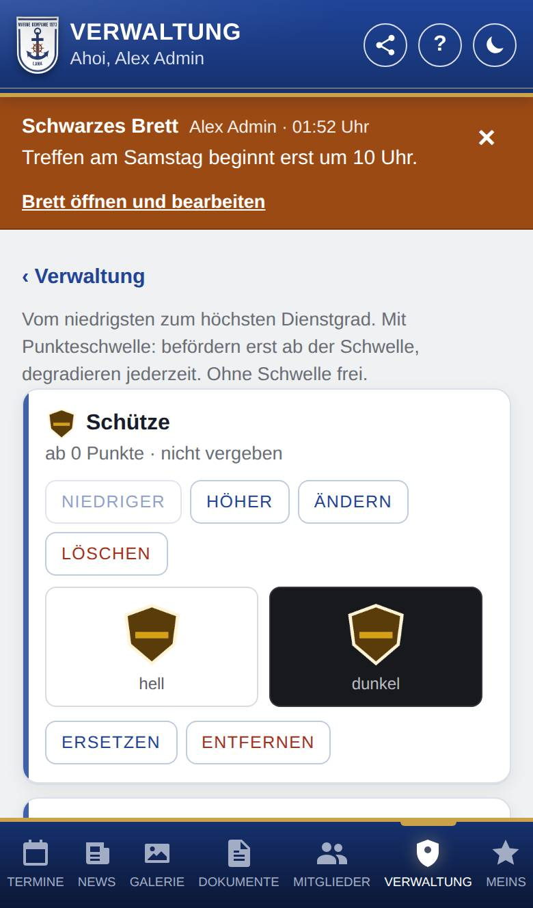
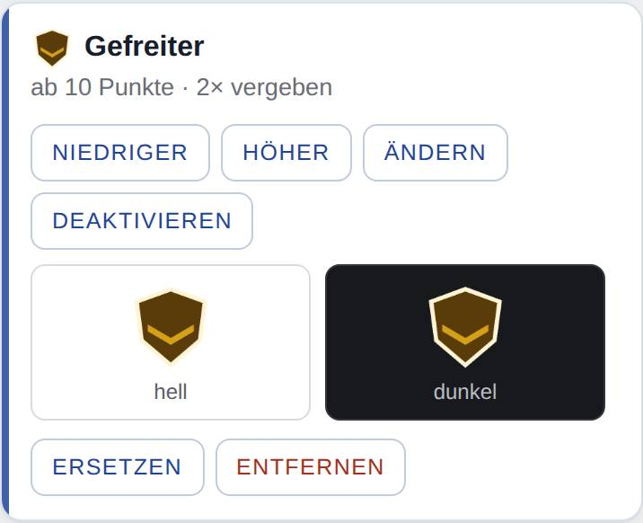
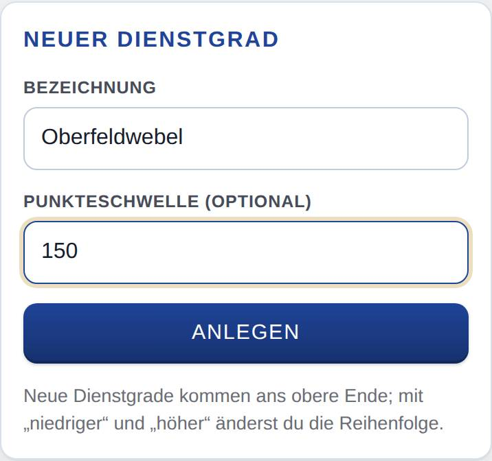

Dienstgrade verwalten
Nur, wenn Dienstgrade eingeschaltet ist.
Hier legst du fest, welche Dienstgrade es bei euch gibt, in welcher Reihenfolge, ab wie vielen Punkte sie erreichbar sind und welches Abzeichen sie haben. Wer welchen Dienstgrad hat, änderst du auf der Seite des Mitglieds.

So öffnest du die Seite
Tippe unten auf Verwaltung und dann auf den Knopf Dienstgrade. Mit ‹ Verwaltung kommst du zurück.
Was du hier siehst
- Die Dienstgrade vom niedrigsten (oben) zum höchsten (unten), jeweils mit Abzeichen, Bezeichnung, Schwelle („ab … Punkte“ oder „ohne Schwelle“) und wie oft er vergeben ist. Deaktivierte tragen das Schild „inaktiv“.
- Bei jedem Dienstgrad die Knöpfe niedriger, höher, Ändern, Deaktivieren (bzw. Aktivieren) oder Löschen.
- Darunter das Abzeichen: eine Vorschau auf heller und dunkler Fläche („hell“, „dunkel“) mit Ersetzen und Entfernen, ohne Abzeichen der Knopf Abzeichen hochladen.
- Unten das Formular Neuer Dienstgrad mit Bezeichnung, Punkteschwelle (optional) und Anlegen.

So gehst du vor
Einen Dienstgrad anlegen
- Trage unter Neuer Dienstgrad die Bezeichnung ein.
- Trage bei Bedarf die Punkteschwelle ein: ab wie vielen Punkte man ihn bekommen kann.
- Tippe auf Anlegen. Der neue Dienstgrad steht ganz unten, also als höchster.

Die Reihenfolge ändern
- Tippe beim Dienstgrad auf niedriger oder höher. Er rückt eine Stufe weiter.
- Wiederhole das, bis er an der richtigen Stelle steht.
Bezeichnung oder Schwelle ändern
- Tippe beim Dienstgrad auf Ändern.
- Ändere Bezeichnung oder Punkteschwelle. Leer heißt: ohne Schwelle.
- Tippe auf Speichern (oder Abbrechen).
Ein Abzeichen hochladen
- Tippe beim Dienstgrad auf Abzeichen hochladen und wähle die Bilddatei.
- Prüfe in der Vorschau, ob das Abzeichen auf heller und auf dunkler Fläche gut zu erkennen ist.
- Ein anderes Bild nimmst du mit Ersetzen, ganz weg geht es mit Entfernen.
Einen Dienstgrad löschen oder stilllegen
- Hat niemand den Dienstgrad, tippe auf Löschen und bestätige. Sein Abzeichen wird mit gelöscht.
- Hat jemand den Dienstgrad, geht nur Deaktivieren: Er wird nicht mehr neu vergeben, wer ihn hat, behält ihn. Aktivieren macht das rückgängig.
Gut zu wissen
- Die Bezeichnung hat höchstens 60 Zeichen, und jede gibt es nur einmal.
- Schwellen: eine ganze Zahl ab 0, leer = ohne. Sie müssen mit der Reihenfolge steigen; sonst meldet die App, welche Dienstgrade nicht passen. Schwellen wirken nur, wenn es bei euch auch Punkte gibt; sonst steht beim Feld „(wirkt nur mit Punkte)“.
- Regeln mit Schwelle (gelten für alle, auch für Admins): Befördern geht erst, wenn die Punkte des Mitglieds die Schwelle des neuen Dienstgrads erreichen. Mehrere Stufen auf einmal sind erlaubt. Degradieren geht immer. Für Dienstgrade ohne Schwelle gelten keine Regeln; haben noch nicht alle eine, weist die Seite oben darauf hin.
- Abzeichen: PNG, JPG, WebP oder SVG, höchstens 1 MB (PNG, JPG und WebP höchstens 4096 × 4096 Pixel). Etwa 256 Pixel an der längeren Kante reichen; die App verkleinert selbst.
- Am besten wirkt ein Abzeichen mit transparentem Hintergrund (PNG, WebP oder SVG). Die App legt keine Fläche dahinter, und der Hintergrund ist je nach Einstellung des Handys hell oder dunkel. Ein heller Rand um dunkle Teile hilft. JPG hat immer einen eigenen Hintergrund.
- Das Abzeichen erscheint überall, wo der Dienstgrad steht: unter Meins, in der Mitgliederliste der Verwaltung, auf der Seite eines Mitglieds und unter Beförderungen. Wer es einmal gesehen hat, sieht es auch ohne Netz.
- Bei einer Beförderung zeigt die Benachrichtigung das neue Abzeichen als Bild. Bei einem SVG zeichnet die App dafür beim Hochladen ein Bild; klappt das nicht, steht „Ohne Bild in Benachrichtigungen“ beim Dienstgrad. Lade das SVG dann erneut hoch, z. B. auf einem anderen Gerät, oder nimm ein PNG.
- SVG-Dateien werden beim Hochladen bereinigt: Skripte, Verweise nach außen, eingebettete Bilder und fremde Inhalte fallen weg. Ein normales SVG aus einem Grafikprogramm sieht danach gleich aus. Dateien mit einer DOCTYPE-Angabe lehnt die App ab.
- Ein deaktivierter Dienstgrad behält sein Abzeichen.